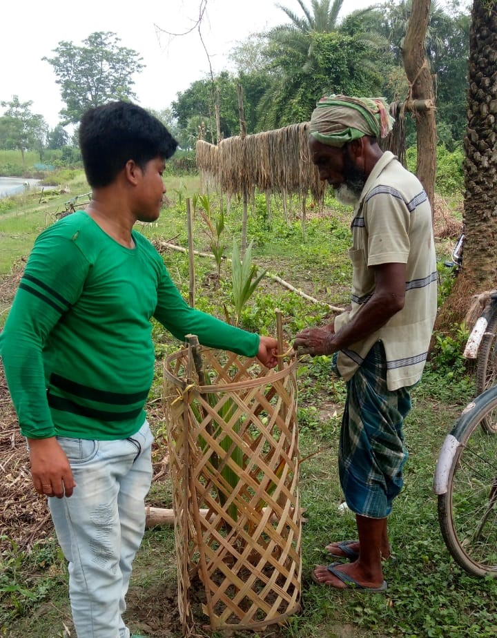
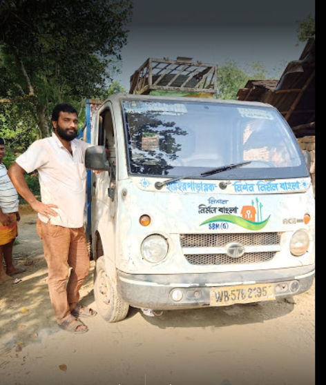

Genesis
Established in 2015 and located in Murshidabad, West Bengal, Hariharpara Gram Kalyan Society aims at giving a better life to the less fortunate. We work to provide them with the basic human rights to education, food, shelter, medical facilities and hygiene. Our goal is to create a society of peace and sufficiency. We want to serve the purpose of humanity as well as of the Almighty.?
Our areas of work include Children,Civic Issues,Dalit Upliftment,Drinking Water,Aged/Elderly,Environment & Forests,Health & Family Welfare,Micro Finance (SHGs),Minority Issues,Panchayati Raj,Rural Development & Poverty Alleviation,Urban Development & Poverty Alleviation,Vocational Training,Women's Development & Empowerment,Youth Affairs
Mission
Mission Nirmol bangla under swachh bharat mission” is what we are working towards.We undertake tasks like cleaning the drains and mounds of garbage.
We spread awareness about proper litter disposal and shovel away litter from the roads and other social areas. We educate the people about the risks and diseases caused due to the lack of personal hygiene and cleanliness.
Awards & Empanelment
We received awards and appreciation for our work during the Covid 19 crisis. We undertook a vast- campaign in which we provided food daily to 1060 people, residing in 10wards,from 23rd March 2020 to 7th May 2020, under Hariharpara block jurisdiction during the entire lockdown period. All the families which had kids under 5years old were provided baby food.
The food was delivered in packages under our management and supervision. The hygiene of the food was maintained, strictly obeying all the preventive measures of social distancing for combating covid 19. The food distribution details ward-wise has been given below: Ward1:115 Ward2:80 Ward3:95 Ward4:150 Ward5:125 Ward6:52 Ward7:18 Ward8:182 Ward9:32 Ward10:211 TOTAL 1060